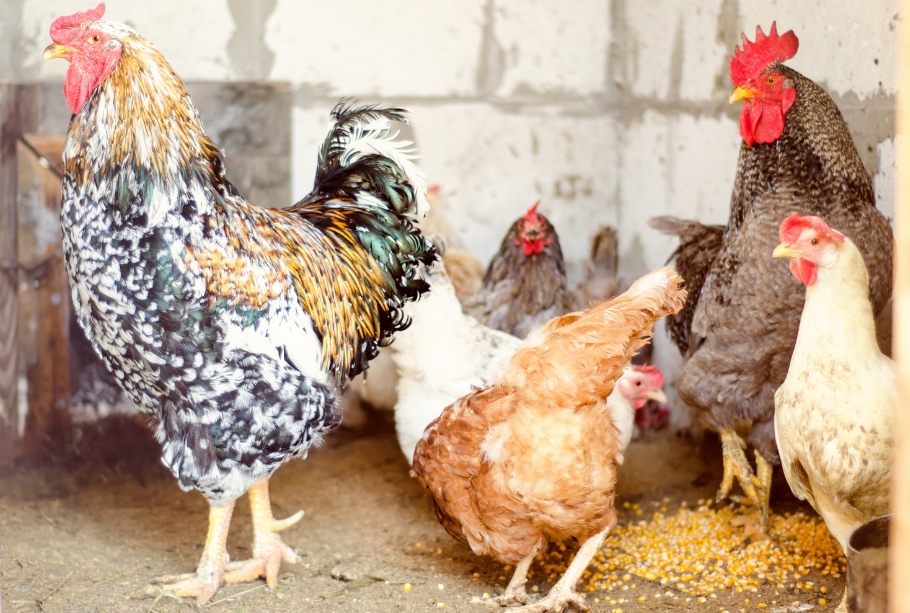
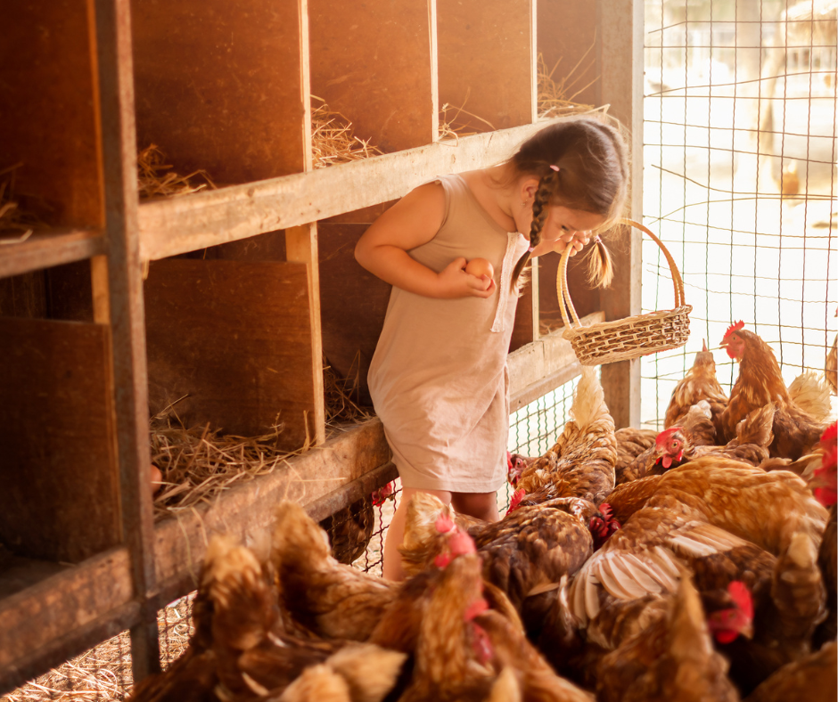
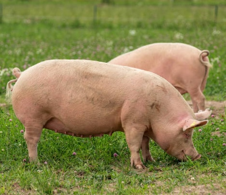

Farm fresh eggs are a delicacy that once you experience, you won’t your eggs any other way. With plump hens producing over four dozen eggs daily, MC Farms sells non-bleached, farm fresh eggs by the dozen. Mostly varying in shades of brown, their egg collection begins at sun rise. From an early age, the responsibility to collect and count the eggs was on Hannah, the oldest. Now, with the addition of her siblings, Hannah’s egg collecting role most days is to supervise. Only every now and again do Hayden or Clayton grip an egg too tightly.


For majority of the chickens at the farm, their livelihood depends on producing eggs. When production stops, the chickens are used for their meat. Less frequently, MC Farms offers fresh poultry including chicken and turkey. Be sure to join their waitlist as availability fluctuates.
Not far from the chicken coop, are the hogs. Raising hogs started to feed their bacon loving toddlers. Soon, their Christmas hams got a reputation that convinced Matt and Courtney to grow their hog supply.


Bees on a farm not only provide honey, but it also helps with pollinating the plants on the farm. Reluctant at first, Matt and Courtney eventually supported their oldest, Hannah’s desire to be a beekeeper. Through support from her 4H and FFA comrades, Hannah now has 4 bee hives that she manages on the farm. Not only is fresh honey delicious, but it can also benefit Hanny’s Honey Hive. Growing up on a farm has encouraged Hannah to become a large animal veterinarian. All money she earns from the beehive goes towards saving for her college education.